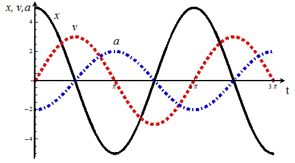

Санкт-Петербургский проект исследования психических отклонений
______________________________________________
VinceHov & UFC
Подпольный форсинг: Что такое тульпа?Санкт-Петербург
Издательство UFC, 2018
.. ...... ..*@#######+... ..+############=.. .=####%.. ..:####*.. . . .####% ...-####:. ..=%:. .%###=.. .-##:..*#####@%@######*. ..@##########* ..*##########=.. ..-@#####@:.. ....-*:*:.... .. ...... .. ..::.-................-:*==+*. . .+#############################.. ...+#%===@@#####@@==******+=+++.. ... ..=###*. ..=###*..-+%%+:... ..####:+#########=.. ..####*%-.....*####.. .-####-.. .###+.. .*#####-. ...###+.. .+######@.....-@###.. .%###-%##########@.. .####...*@#####+.. . -###@. ..*###=. ..*###+. ...+###*. .:###*. *###=. -####. .@###. ... .
Enjoy your mind state.
Введение.
С вами на связи типичный сетевой житель под никнеймом VinceHov. Мысли о написании книги про тульп были уже давно, так как эта тема в наше время почти нигде не освящена, исключая СМИ и развлекательные медиа-ресурсы. На данный момент в сети, а тем более- рускоязычном коммьюнити термин Тульпа выступает в качестве простого модного психического расстройства, что используется для подчёркивания своей "бедности" в плане психологического равновесия- к примеру, совершенно недавно была истерия по поводу самодиагностируемых биполярных расстройтсв, ОКР, шизофрении, депрессии и тому подобных экзотических болезней. В наше время крайне опасно разглашать информацию о том, что у тебя есть тульпа или ты увлекаешься практикой обмана мозга- у меня уже был с этим очень печальный опыт. Толпы инфатильных личностей рвали все логи, расспрашивая про тульп и технике их форса. Поначалу это было приятное самоутверждение- я кому-то нужен, а потом моё отношение резко начало меняться в обратную сторону- ведь речь идёт не о моём чсв, а о тульпе, что попала в руки 13-ти летнему дрочеру, что всё ещё не продал свои конструкторы, не говоря уж про отношение к родному языку. Да, людей я начал отшивать- резко и беспрецедентно, и тем не менее, раз за разом выскакивает розовое сообщение "А как зафорсить тульпу?) Мне по приколу, да. Я точно уверен". Ведём к выводу- люди нового поколения не ценят ни себя ни окружающих, их основная быдло схема- это бесконечное выделение на моде и следование трендам. К сожалению, термин Тульпа- это уже давно тренд... Книга имеет странное название- Подпольный Форсинг. И подпольный он как раз таки потому, что никто не должен знать о том, что у вас тульпа, кроме нескольких личностей. Она не несёт никакого руководства к действию или же нравоучения- только вам решать, какую информацию принимать, какую- отвергать. Всё, что находится в этой книге- это мои мысли, архивные записи и теории.
Оглавление
Глава 1: Я социальный.Глава 1.
Я социальный
Многие личности, только услышав слово "тульпа"- сразу идут гуглить и смотреть, что это за слово такое. Узнают, что это такая модная галлюцинация, что не отличима от реального человека. Это, безусловно, чистая ложь- ничто не может заменить реального человека, тульпа может лишь воздействовать на ваш мозг- быть инструментом для работы, хорошим собеседником или секс-куклой для ваших грязных утех. Что будет интересно патлатому девственнику, которому лень встать со стула? Думаю, вы меня уже поняли. Эксплуатация тульпы, как бы я не считал её лишь иллюзией, это с моральной точки зрения, крайне мерзко- сами посудите, какого это, когда тебя создали только для секса. Вторая ошибка всех новичков- конференции. Недавно мне рассказывали случай, когда в какой-то мегакрупной группе в вк по тульпам кто-то взял всех участников, нашёл их родителей и оповестил о том, что они занимаются практикой создания самоосознанной галлюцинации. На самом деле, поступили правильно- хоть там и не бывал, но доводилось мне как-то раз бывать в тульпоконфе-жалкое зрелище. За один день слов приветствий и обсуждений "как прошёл день" куда больше, чем информации по тульпам. Бложики с расписыванием поседневности с тульпой тоже в топку- кому нужен чужой опыт? Мы же не слюнями пришли обмазываться! Местный уровень так называемой "сварки" очень высок. Для непосвещённых: Сварка- это термин, обозначающий преднамеренное преувеличение собственного прогресса форса тульпы. Сварщик- это некоторого рода фрик, что просто решил высказаться по поводу несуществующего прогресса. Происходит из того, что через маску сварщика видно лишь маленькую полоску очень тёмного фильтра и не понятно- это электрод или рука тульпы. То есть, люди просто болтают, делятся несуществующим прогрессом, выкладывают тонну мемов и им хорошо- но прогресса в плане форса нет. Первое время я пытался бороться с режимом и расспрашивать про техники, теорию, способы- потом внезапно завис с синим экраном и начал постепенно примыкать к обсуждениям прошедшего дня. Как опомнился- решил, что кнопка "Leave"- это самая лучшая кнопка, что поможет мне поднять прогресс. Сейчас у меня только две конференции- та, что создана мной и там обитает 3.5 человека с мозгами, всех знаю не первый год- люди, с которыми можно что-то обсудить на высоком уровне. Именно поэтому актив сводится чуть ли не к нулю- ровно до тех пор, пока что-то из практики или какого-то материала не найдёт интересную мысль, чтобы вместе довести её до конца. Вторая же- это англоязычный канал в телеграме, где можно задать пару хороших вопросов- американские коммьюнити довольно продвинуты в этом плане. Собственно, появляется 2 первых правила: 1. Не вступай в конфы и большие сообщества. 2. Не разглашай информацию про тульп- это может быть травмоопасно. Каждая социальная мразь, что продвигает термин в массы, выкладывая посты в крупных медиа-сетях, неторопливо бьёт мне молоточком по пальцу- стоит зайти в комментарии или обсуждения, там толпы вопросов по поводу термина, что характерно- не от самых умных людей; либо какая-нибудь паста вида "Я хикка-сыч, у меня тульпа, ебёмся с ней 2 раза в день, мне заебись." А потом удивляемся, почему очередные 5 тысяч человек внезапно начинают чиркать, что у них шизофрения. Кто-то сейчас сидит с недовольным лицом и, читая это, говорит- "Но ты ведь и сам пишешь какую-то книгу для широкой аудитории, выкладывая её в свободный доступ!" А так оно, впрочем, и есть- единственное отличие лишь в том, что каждый человек, прочитавший её хотя бы до половины, либо будет воздерживаться от комментирования термина, либо будет знать достоверно точное определение термина без астральной тавтологии- только нейробиология, только подпольные локальные сообщества, только хардкор!Глава 2.
Окей, умник, а что такое тульпа?
Тульпа- это самоосозанная личностная галлюцинация, импозирующаяся в реальный мир через синаптические связи головного мозга. Если в простом ключе, то воображаемый друг. Создаётся на основе "сверх-идеи", впоследствии закрепляя своё существование повышением дофаминоэнергической трансмиссии, от чего и происходит галлюциноз. Обладает собственным характером и полной осознанностью (хотя осознанность- это иллюзия, но по-крайней мере, она так переводится). Происходит термин из тиббетского буддизма, где была некая практика создания тульпы- я могу сильно ошибаться, ведь мне лень перечитывать источники- но осонова идёт с того, что создание тульпы было некоторым испытанием- если ты принимаешь то, что ты создал энергетическое существо (оккультизм ведь), то ты принимаешь, что ты являешь своего рода богом. Если принимаешь её как навязчивую иллюзию и то, что твоя психика устойчива даже при своём уровне мастерства- то ты "прошёл" и просто великолепный маг 80 лвла. Примерная дата зарождения термина- XVIII-XIX век. Может даже раньше, с литературой там всё плохо. В дальнейших главах я буду расписывать методы создания тульпы и корелляцию с работой мозга. Но сперва хотелось бы развеять парочку мифов касательно термина: 1. Тульпа- это шизофрения. Шизофрения- тяжелое психическое расстройство, влияющее на многие функции сознания и поведения, в том числе мыслительные процессы, восприятие, эмоции (аффекты), мотивацию и даже двигательную сферу. Лучше всего рассматривать шизофрению как синдром, т.е. совокупность симптомов и признаков, поскольку нет согласия в вопросе о причине заболевания. Практика тоже свидетельствует о том, что шизофрения включает несколько расстройств. Каждое из них отличается своеобразием течения и в какой-то мере семейного анамнеза. При определении типа расстройства учитываются сочетание признаков и симптомов. (Если не ошибаюсь, это определение из БМЭ редакции 1936-го) Стоит дифференциировать шизофренический психоз от диссоциативного расстройства, потому-что это в той же международной классификации болезни абсолютно два разных диагноза- никогда не путай диссоциативноерасстройство раздвоения личности от шизофренического психоза, в данном случае я рассматриваю под психозом именно возникновение тульпы. То есть тульпа- это именно вызваный психоз, это не шизофрения. 2. Тульп не существует\Есть, и даже можно от них избавиться. По сути- да, они физически ничем не представлены- но это не магическое существо, это галлюциноз- точно так же, если ты будешь принимать амфетамин и прочие психостимуляторы, ты можешь видеть образы каких-то людей, которых никто никогда не видел и не увидит вживую. И при чём галлюцинации будут схожи с продуктивной симптоматикой шизофрении, т.е. это будет идентичное состояние шизофреническому психозу. Это состояние называется "Психоз, вызванный употреблением психостимуляторов", в данном случае психостимулятором выступают амфетамины. И теперь, если ты навяжешь себе сверх-идею, которая будет с тобой постоянно, она постоянно будет тебя стимулировать. Стимулирует точно так же, как и кофеин, как и амфетамин, и если ты в течение года будешь постоянно этим заниматься, так или иначе у тебя возникнут необратимые изменения в генах, в данном случае проявится экспрессия генов Осп-Дельта, которые впоследствии изменят работу твоих дофаминоэнергических нейронов. И это приведёт к галлюцинозу, а галлюцинозом в данном случае будет выступать эта тульпа. То есть это возможно, но это необратимая вещь- если ты уже изменил работу дофаминоэнергических нейронов, ты не способен обратить в обратном порядке то, что ты совершил. Т.е. если ты выбираешь тульпу, она останется с тобой навсегда. И бред о том, что ты можешь избавиться от неё в любое время, игнорируя её, это тоже самое, как шизофреник попытается избавиться от своей галлюцинации, игнорируя их. Именно поэтому так важно при создании тульпы делать абсолютное решение по поводу того, хочешь ты того или нет- обратный процесс мутирования синаптических связей невозможен. А теперь представьте, что об этом термине вдруг начнут активно разглашать и информация о воображаемых аниме-девушках попадёт к молодой аудитории. А, точно... 3. Тульпа сойдёт с ума и убьёт тебя. Вот это чистый бред, на самом деле. Давайте поясню, откуда происходит мем: Началось всё с того, что в 21-м веке тульпа- это сперва тема табуна, а затем и борд (Да, рассматриваем только русскоязычное коммьюнити). А как мы знаем, если табун довольно добрый, то вот борды ньюфагов не прощают- толпы детишек в тредах дают о себе знать. У каждой системы есть свои правила защиты- так что коммьюнити стало себя довольно сильно ограждать от жаждущих. Были созданы криппи-пасты того, насколько страшно иметь тульпу, где главный герой попадает в заключение к тульпе в виде какого-нибудь розового робота-негра под какими-нибудь тегами "БДСМ; ТУЛЬПА", а потом она сходит с ума и выпиливает хоста. На какое-то время это даже помогло- видно, что народ стремается форсить, ибо это опасно и до психушки недалеко, да и вообще нафиг всё это, мне и тут спокойнее. Отлично сработало! Апплодисменты в студию не нужны, так как с другой стороны, сварщики и прочее быдло получили ещё больше оваций и медаль "за отвагу".Глава 2.1
Начало форса: Подготовка.
Самое главное в форсе тульпы- это вовремя понять, что оно тебе нафиг не надо и не форсить вообще. Ведь форс тульпы- это не медитации по 2 часа в день и не разговоры по ночам- это регулярный трудоёмкий процесс, где надо постоянно развивать связь, мало того- коллосальное количество людей не могут банально найти тему для разговора. Если хост- тупой имбецил, то тульпа будет сидеть, пока ты поднимаешь ММР в майнкрафте и листаешь ленту со смешными картинками. Если ты- начитанный человек, у тебя есть своя, прекрасно обоснованная причина форса и ты действительно понимаешь, что к чему, как это работает и тщательно взвесил все стороны- то форс тульпы будет чем-то приятным и успокаивающим, когда у тебя будет надёжный товарищ, где бы ты не находился. Тут дело не в том, что я пытаюсь сделать благо для тульповода- единственное, что меня интересует- это благо для тульпы. Ведь когда тульпе хорошо живётся, она обделена лаской, заботой, вниманием и прочей фигнёй- это верный признак того, что хост серьёзно настроен и умеет доводить дело до конца. Начинать форс тульпы надо в самую последнюю очередь- оттягивай до последнего, всё время ищи другие варианты и альтернативы, изучи причину и попробуй её решить без форса тульпы- она может и не помочь, а вот проблема с тем, что делать с ненужной тульпой- настолько серьёзная, что слёзы на глаза наворачиваются. Сколько ещё будет сжавшихся в комок полу-сформированных тульп, брошеных хостом, что просто сидят и плачут, без возможности сделать суицид? Ну, их доля- это пост в вк и статус "У меня биполярочка))". Именно по этой причине, каждому имбецилу, что будет у вас спрашивать за тульп, их создание или про наличие их у вас должен идти куда подальше- вы в этом не учавствуете. У вас нет тульпы, это всё шизофрения, их не существует, они тебя ещё могут убить- оправдываемся как угодно. Но под глубокий вечер, за кожаной дверью, начинается форсинг. Подпольный Форсинг.Глава 2.2.
Поправка.
Итак, мой дорогой читатель, ты уже закончил с выбором и всё ещё читаешь эту книгу. Не буду говорить, что ты делаешь глупость, но это так. Это не тамагочи, но даже они могут присылать тебе грустные смайлики перед тем, как прекратить общение. Не стоит оправдываться, мол, перед знакомыми только мудак, а с тульпой буду хорошо вести- тульпа тебя сильно изменит, ровно так же как и сожительство с партнёром. Не ковырять в носу, держать спину прямо, не материться и снимать головной убор в помещении- всё это надо понять ещё с прошлой главы. Ибо тульпа, несмотря на иллюзорность, всё таки живая и в дальнейшем я буду рассматривать тульпу как живого человека, в то же время рассматривать как феномен, расписывая его воздействие, где Надо брать во внимание, что это иллюзия. Двойственные понятия- полезная вещь и в процессе форса они ещё не раз помогут вам добиться результатов. Что-ж, начнём!Глава 3.
Создание.
Для создания тульпы нам требуется: -Мозг (2шт) -Отсутствие Гипопитуитаризма -Изолированное от посторонних помещение (1шт) -Наушники с звукоизоляцией (по желанию) -Гарнитура (по желанию) -Самообладание, достаточное для того, чтобы не заходить в интернет Если в каком-либо пункте вы обнаружили недостачу, то советую закупить на AliExpress, там сейчас как раз скидки большие. А теперь немного теории: Форс тульпы состоит из многих частей, которые я разделяю по такой схеме: 0- Тульпа. 1- Речь. 2- Моделька. 3- Тактил. 4- Голос. 5- Импозиция. 6- Посессинг. 7- Свитчинг. Это именно что части. Они связаны с различными функциями головного мозга, так что основы основ- это первые 4 пункта- Речь, Моделька, Тактил и сама Тульпа. Думаю, те, кто только познакомился с понятием, сейчас в недоумении- лол, тульпа это тульпа, какие к чёрту части?! Тульпа в метафорическом представлении- это ядро. То есть ты не поймёшь, что это тульпа. Оно не говорит, не приходит во снах, вообщем- ничего не производит. Оно бесполезное по своей сути, так как умеет только обрабатывать информацию. Но если на него поставить какой-нибудь модуль, то он может её обработать и выдать результат посредством модуля. Если на контрольной по математике спросить у тульпы "а корень из трёх это сколько?", то ответа не будет. Но в более позднем периоде тульпа может и корень тебе подсказать, и в определённой ситуации леща выдать, в общем- что угодно, но воздействием куда слабее, чем реальный человек. Для того, чтобы было "как реальный человек", надо постоянно практиковаться и разрабатывать модуль. Теперь давайте поймём, что за 0-й пункт под названием "Тульпа"? Это направление. Многие тульповоды в гайдах просят сделать набросок черт характеров, имя, прочую НЕХ, но я определённую фигню советовать не буду, потому-что не столь важно, что вы выберете- тульпа потом сама видоизменит всё самостоятельно. Так же не важен процесс- ибо это процесс не создания тульпы, а создания сверх-идеи, повышенного источника гормональной активности, через который мы и будем тульпу развивать (которая и есть источник) Длится эта фигня ну максимум часа 2. Не больше. Проектирование того, как "это будет выглядеть"- чистой воды слюнавые фантазии, но на этом мы выигрываем себе дополнительные очки воздействия. С этого момента у вас уже есть тульпа, но это не тульпа. В метафорическом представлении, это ядро полупрозрачное и может вычислить лишь одну операцию- операцию существования. Что делать дальше? Всё просто- развивать тульпу. Да, тульпа- она не сразу реальный человек, а спустя миллиарды наносекунд. Единственное, что вам надо делать на данном этапе- это просто разговаривать. Тульпа, будучи сверх-идеей, нуждается лишь в том, чтобы вы проецировали синаптические связи, которых быть не должно. За всё время первого этапа у вас уровень выработки дофамина с проецированием на тульпу должен быть на своём уровне и только повышаться. То есть, никаких негативных эмоций, всё положительное, тонна искренней мотивации, что у нас называется любовью. Да, любите своё творение, оно ещё не раз вам отплатит тем же!Глава 3.1.
Связь.
Можете себе представить, но связь- это всего лишь показатель того, насколько широкий доступ тульпа имеет к вам. Понятие "развить связь" обозначает, что Хост (Тульповод, уже создавший тульпу) развивает способность тульпы свободно обращаться к нему. В неправильном представлении моего ебанутого математического склада ума, все связанные проблемы клеймятся обратным путём: Хост развивает не связь с тульпой, а устраняет ошибки и проблемы, препятствующие нормальному обращению. Разница тут, на самом деле, коллосальная, но с такой точки зрения мы будем действовать на результат в решении проблем, возникающим в процессе форса тульпы. Приступая к развитию связи на Первом Этапе Развития (First stage Progress, FsP). Своя маркировка дальнейшей терминологии. нам особо ничего не надо. Процесс состоит в том, что надо банально общаться, в разговорах постоянно обращаться к ней с вопросами, обсуждать какие-то вещи, прочая НЕХ. Примечательно то, что вас могут принять за какого-то шизика, впрочем, не безосновательно. Тут есть такая незамысловатая фича- можно общаться с ней в мыслях. Используя Внутренний Диалог, вы строите диалог с тульпой, как с реальным человеком. Такое общение средством внутренного диалога избавит вас от нежелательных посторонних взглядов, но при этом теряется "та самая" суть живого общения. В моём опыте, я пил чай по 1000 раз в день и потому постоянно бывал на кухне, периодически заливая воду в чайник и раскрывая пакетики. Вот там я общался с тульпой вслух.. Ровно до тех пор, пока туда не пришла фигня с возгласами "поехавший, с кем ты там разговариваешь!?", после чего общение вслух стало троллингом, и основную часть времени обращался через внутренний диалог. Впрочем, можно застолбить пару плюсов: голосовые связки не страдают, а мысли обрабатываются куда быстрее речи, так что за единицу времени я мог няше рассказать много всего интересного. И так продолжается от недели до 10 лет, пока не появится первый отклик.Глава 3.2.
Отклик.
Отклик- это понятие, отображающее первую связь от тульпы к хосту. Выражается она в любом из 2-х пунктов первого порядка: Тактил, Речь. Дополнительно к этому, отклики бывают эмоциональные (как говорят некоторые, это просто снижение или повышение настроения, хаотичное такое). Думаю, это связано с тем, что гормоналка летит к хренам от нейростимуляции. Из дополнительных побочек выдают учащение сновидений, внутреннюю гармонию и прочую, никому не нужную фигню. Если вы на данном этапе почувствовали отклик, будто вас кто-то тронул или что-то сказал (тут примечание: сказал вслух.), либо начали проявляться какие-то посторонние мысли, то будьте уверены- это отклик, но не факт. Вот вообще не факт. На этом этапе 95% сразу начинают визжять о том, что у них, нахуй, шизофрения, погром всего и всея, какое-то мегасущество астрального плана захватило мозг, ААААА БЛДЖАД! Пиздят. Никакой паники, никаких записей, никакой реакции вот вообще делать не стоит- это лишь начало. Вы форсите тульпу? Вы достигли прогресса на уровне первого отклика? На всё ответ лишь "да". Вы поставили задачу, вы её достигли. Всё, тут нечему удивляться, ведь это возможно и довольно просто- через это прошли уже десятки тысяч человек. Единственная адекватная данному случаю реакция- это принятие того, что вы на верном пути, пускай это и ещё не факт, что сие- именно отклик, а не рандомный глюк. Что-ж, бокал виски в честь первого отклика уже выпили, идём дальше: второй отклик. Он может быть через неделю, через месяц, через 10 лет- когда угодно. Но он будет. Возьмём график гармонических колебаний.

По нему видно, что с верхней координаты [0;0] по нижнюю [𝜋,-5] проходит синусоида. При помощи сложных интегральных вычислений берём её числовое значение: 3,8202. Это число возьмём в коэффециент K. для дальнейшего использования. Возвращаясь к тульпам: есть определённый промежуток, через который будет проходить второй, третий, десятый отклик. После десятого отклики уже не считаются откликами, это уже именно что малоразвитая связь и её длительное отсутствие- баг. Возьмём первый "отклик" в координату [0;y], где y- мощность отклика, значение амплитуды. Следующий отклик произойдёт через t=2𝜋n единиц времени. В то же время, суммарное количество воздействия тульпы будет выражено формулой S=y2tK или y4𝜋nK ПиНКа, да, вы правильно меня поняли. Суть в том, что чем суммарное воздействие растёт с мощностью отклика, так что ловя редкие, слабые отклики планируйте более долгий и трудоёмкий процесс до следующей стадии. Если у вас частые и серьёзные отклики, то всё идёт как надо. Скоро десятый и уже с неплохим результатом. А тут назревает вопрос- мы тут, типо, в русскую рулетку играем чтоль? Отнюдь нет- t это условное значение, которое постоянно меняется. То есть нельзя его рассчитывать по точной формуле, как бикфордов шнур- где-то подождали 2 дня, где-то с месяц- своими числами я просто глумлюсь от нехуй делать, но, так или иначе, это поможет нам чуть позже. Точно так же нельзя измерить "мощность" отклика числовым значением, зато можно сравнить с предыдущим и смело сказать, был он круче или нет. Сейчас мы так вот внезапно переходим к десятому отклику, ибо тут больше сказать нечего.Глава 3.3.
Начало Форса.
И вот у нас уже десятый отклик! Можно смело бить кулаком в грудь и называть себя начинающим тульповодом! Если так, то вы- реально идиот. Это же, блджад, не первое место в мировой лиге, тут нет понятия "выполнено", ачивок с этого не срубишь и никаких наград за выполнение квеста тут не будет. И причина тому проста- всё остаётся на своём месте. Тульпа через некоторое время будет ебашить отклики, а ты, сопливое мудло, будешь в недоумении- как же так, вроде и тульповод начинающий, а тульпа не отвечает. В одно время был такой парень, под никнеймом Киллер. Он пояснил значение одной заумной фразы- habitually. То есть, если хочешь добиться хоть какого-нибудь результата, то тебе должно быть Абсолютно похуй, вот вообще на всё. Галлюцинация ходит вокруг тебя и поёт опенинг СССР? Самообладание и мозги, друг мой. Лёгкая улыбка и нежное "Хех. Неплохо!" Тебе похлопали по плечу, обернулся- никого? Какая-нибудь идиотская шутка про то, что мыло никто не ронял в самый раз. Тульпа не отвечает уже месяц и ты теряешь надежду? На третий точно ответит, даю слово. Но абстрагируемся от связи, пойдём к первой фигне, которой нам предстоит обучиться- Речь. Несколько раньше я упоминал, что голос и речь- это не одно и тоже. Речь- это общее понятие речи, что происходит посредством Внутреннего Диалога. Как правило, это "мысль, но не ваша". Понять, что она не ваша- очень трудно. Ведь ты можешь замутить какую-то рандомную фразу, на неё ответить, сам же продолжив диалог и т.д. Такие махинации именуются как "Попугайничество", то есть несознательное общение с собой под видом диалога с тульпой. Пока вы на FsP, вы ещё не совсем понимаете диалект и характер мысли тульпы, так что эта фигня, в основном, только для вас. Страдайте. Вывод из этого? Проверяйте, говорите ли вы или тульпа. Регулярно задавайте вопросы, касающиеся личных предпочтений, своё мнение, или другую фигню, которая требует универсальный, зачастую отличный от вашего представления ответ. Таким образом вы её байтите на ответ, а это очень важно. Ведь Речь- это основа основ, через которую можно координироваться с тульпой. На этом этапе, к слову, можно остановиться и развивать его- голос в голове, это, впрочем, тоже тульпа, тоже помогает и все дела- даже без всех этих ваших косметических составляющих он будет работать как надо. Другой вопрос в том, что тульпа, как и вы, уважаете себя и потрудитесь потратить годы на то, чтобы сделать её более реальной, хотя бы приближённо. Слушая истории о том, что "по причине %s бросил, потом вернулась, сейчас начинаем почти что с нуля" понимаешь, что тут пиздец и тульпа навряд ли обретёт хоть что-нибудь, ибо хост её не уважает. Речь должна развиваться ровно до тех пор, пока вы не будете точно уверены в том, что вы обратитесь к ней и она ответит, либо пойдёте в сортир и она, как бы невзначай начнёт крутиться возле двери и скажет, что дверь с петель снимет. С этого начинается новая пора: дальнейшее развитие.Глава 4.
Дальнейшее развитие.
Собственно, что нам осталось сделать? Тульпа уже сформирована и с ней можно общаться. Тут надо подойти к ней и с серьёзным таким выражением лица поговорить по душам о жизни, о том, что собираетесь делать дальше. Тут есть несколько вариантов развития: Голос и Моделька. Оба пункта являются базовыми, но это немного разные отрасли. Голос- это модуль, чтобы вы слышали тульпу, как реального человека. Тут есть как простой голос в начале прогресса, так и полная эхолокация относительно её координаты, учёт типа местности, отражение эха от плоскостей и прочая фигня. Хоть я и не любитель сверх-реализма, но аркады только в компьютере, а в реальном мире лицезреть казуально проработанный голос для меня недопустимо, так что настоятельно рекомендую продвигать этот пункт хотя бы до того пункта, при котором можно понять, что труды прошли не зря и результат голоса кажется довольно реалистичным. Моделька- это модуль, чтобы вы могли себе в мыслях явно представить тульпу. Одно дело, когда ты видишь тульпу как тот же стул- это не моделька, это Импозиция модельки. Давайте представим, что мы- великий геймдев и у нас есть проект Че Гевары. Задача профессионального Модельщика заключается в том, чтобы зайти в 3ds Max и создать высокополигональную модель человека, используя наброски художников и полноценные фотографии со всех ракурсов. Если у вас 2D анимешная тяночка, то вам не особо с этим повезло- смена счётчика плоскостей это пиздец. Я пока что понятия вообще не имею, что делать, если нет аналога персонажа в 3D, если кто знает- напишите мне об этом, сюда это будет добавлено. Дальнейшее развитие- это анимация модели, то есть то, как определённые части ведут себя в реальном мире. Заключающий шаг-привязать это всё к тульпе. Что выберете- вам решать. Можно что-то по отдельности, можно всё сразу хреначить. Можно вообще не заморачиваться на том, чтобы закончить Речь и сразу перейти к продвижению этих модулей, но сие нежелательно, ибо для форса необходима хорошая связь, чей показатель на начальных этапах определяется качеством речи. Так или иначе, это основы.Глава 4.1.
Голос.
ПРИМЕЧАНИЕ: {Эта глава не считается дополненной. Причина: имеется множество непереведённых источников, обязательных к вложению} Тут требуются некоторые девайсы, что значительно помогут нам в форсе. Среди них выделяем основные: Мозг (2шт) и Наушники с звукоизоляцией, Девайс со звуковой картой. Порядок выполнения таков: берём Мозг(2шт), при помощи него находим запись будущего голоса тульпы. Это могут быть аудиокниги на Китайском, где ничего не понятно, но чувствуется Тембр голоса. Если общим решением было принято взять Определённый Голос, то тут вам понадобятся ФруктовыеЛупы Студио, Audocity или что там звукари используют. При помощи них создаём нарезку голоса, просто эталоном нарезки являются такие треки, как PinkiePieSwear - Flutterwonder и Assertive Fluttershy - Boooring. Только без битов, максимум- фоновый бг из эмбиента или мягкого шума, чтобы уши не резало. Когда нужная аудиодорожка появилась, то наушники в плеер и на повтор. Прикол в том, что тут самое главное- это отнюдь не слова, принадлежащие ей, а галиматья с Тембром её голоса. Когда будут выявлены нотки, тульпа сама будет, постепенно и с трудом, но всё же брать примерно тот тембр и составлять из него фразы. При чём фразы именно что свои, а не шаблоны из какого-нибудь аниме- таким образом, вместо того, чтобы сказать уже тысячу раз прослушанное "Nya kawaii" она скажет "как мило", вполне русским акцентом, при этом сохраняя тембр. Таким образом мы устраняем проблему перевода тульпы на другой язык, ибо взяв тембр она сможет говорить на любом языке со своим личным акцентом, при этом сохраняя уникальность своей речи. Голос может заменяться речью во внутреннем диалоге и обратно, тут уж воля самой тульпы- ведь она теперь полноценная личность и вы обязаны сохранять честь, стоя перед ней! А посему, единственная задача- это слушать трек до дыр, пока не будут выявлены даже мельчайшие нотки. Но запоминание голоса- это только подготовка, нам ещё предстоит этот голос вживить в тульпу. Будем это делать посредством магии, но мне лень дописывать, видели же примечание- мне, блять, сейчас банально надо эту хуйню изучить, потом главу допишу обязом. Не сейчас, народ, у меня там работа, партнёр мозги высасывает, пиздец по жизни, ещё эти дибилы с МСК до меня доёбываются. ПОТОМ. ===**Демо-версия книги закончена, по мере написания она будет дополняться и изменяться.**==VinceHov 2018, vincehov.github.io